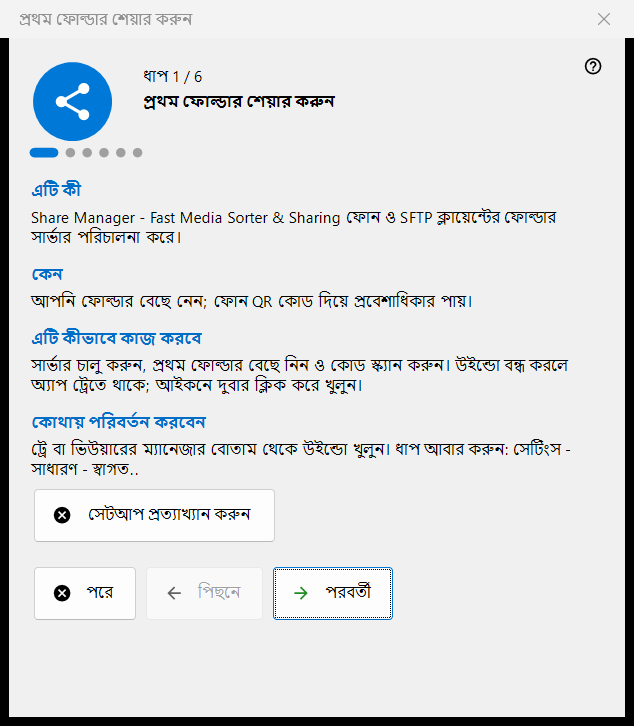
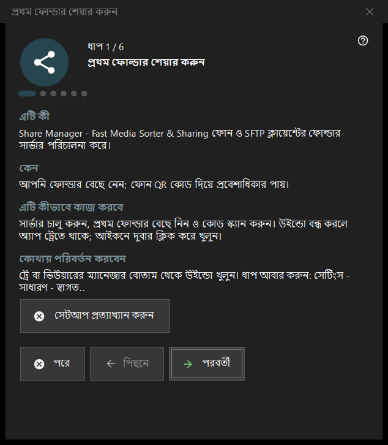

প্রথম ফোল্ডার শেয়ার করুন
এটি কীসের জন্য
ছয় ধাপের উইজার্ড, যা আপনাকে শূন্য থেকে ফোনে পরিবেশিত একটি ফোল্ডার পর্যন্ত নিয়ে যায়: সার্ভার চালু করে, প্রথম ফোল্ডার বাছে, পোর্ট ও মৌলিক বিকল্প ঠিক করে এবং অবস্থা যাচাইয়ে শেষ হয়। এটি Share Manager-এর প্রথমবার চালুর সময় খোলে এবং সেটিংস থেকে আবার চালানো যায়।


এই ক্রমে
- ভূমিকা পড়ুন এবং পরবর্তী চাপুন।
- সার্ভার চালু করুন পৃষ্ঠায় বোতামটি একবার চাপুন এবং প্রশাসকের অনুরোধ নিশ্চিত করুন।
- প্রথম ফোল্ডার ও তার বিকল্প বেছে নিন।
- পোর্ট রাখুন বা বদলান।
- ভাষা, স্টার্টআপ ও স্থানীয় নেটওয়ার্কের বিকল্প ঠিক করুন।
- শেষ পৃষ্ঠায় অবস্থা দেখুন, QR কোড খুলুন এবং শেষ চাপুন।
উপাদানসমূহ
ধাপ ও বোতাম
নিচের অংশে ধাপ N / 6 দেখায়। পিছনে ও পরবর্তী পৃষ্ঠাগুলোর মধ্যে যায়, শেষ পৃষ্ঠায় পরবর্তী বোতাম শেষ হয়ে যায়, পরে উইজার্ড বন্ধ করে এবং আপনি আগেই যা নিশ্চিত করেছেন তা রেখে দেয়, আর সেটআপ প্রত্যাখ্যান করুন সেটি চিরতরে বন্ধ করে। প্রতিটি পৃষ্ঠায় চারটি ছোট অংশ আছে: এটি কী, কেন, এটি কীভাবে কাজ করবে এবং কোথায় পরিবর্তন করবেন।
সার্ভার চালু করুন
এই ধাপ পর্যন্ত সার্ভার বন্ধ থাকে। চালু করার বোতাম একবার প্রশাসকের অধিকার চায় এবং প্রোগ্রামের জন্য Windows ফায়ারওয়ালের একটি নিয়ম যোগ করে। অনুরোধ বাতিল করলে সার্ভার বন্ধ থাকে এবং আপনি আবার চেষ্টা করতে পারেন; আগে থেকেই চালু থাকলে পৃষ্ঠা জানায় আর অনুমতি চাওয়ার দরকার নেই।
প্রথম ফোল্ডার
একটি ফোল্ডার বাছুন, তারপর তার নাম, প্রোফাইল ও অ্যাক্সেস। এখন প্রথম রিসোর্স যোগ করুন.. রিসোর্স উইজার্ড খোলে। এগোতে অন্তত একটি ফোল্ডার লাগে। সেটিং সার্ভারে পাঠানো হয়, আর ফোল্ডার মূল উইন্ডোর তালিকায় সম্পাদনা করা যায়।
পোর্ট
সিস্টেম বেছে নেয় একবার একটি পোর্ট বরাদ্দ করে তা রেখে দেয়; স্থির পোর্ট: আপনাকে নিজের সংখ্যা লিখতে দেয়, যেমন রাউটারে পোর্ট ফরওয়ার্ডিংয়ের জন্য। সংখ্যাটি প্রতিটি QR কোড ও .fmscfg ফাইলে লেখা হয়, তাই পরে বদলালে আগেই দেওয়া কোডগুলো কাজ করা বন্ধ করে। ফায়ারওয়ালের নিয়ম প্রোগ্রামের, পোর্টের নয়।
মৌলিক সেটিং
ইন্টারফেসের ভাষা, Windows লগঅনে চালু করুন, চালুর সময় ম্যানেজার উইন্ডো খুলুন এবং শুধু স্থানীয় নেটওয়ার্ক (ইন্টারনেট থেকে অ্যাক্সেস নেই)। স্থানীয় নেটওয়ার্ক মোড পোর্ট ফরওয়ার্ডিং ও ইন্টারনেট ঠিকানা বন্ধ করে দেয়। Store সংস্করণের স্টার্টআপ বিকল্প Windows সেটিংসে পরিচালিত হয়।
শেষ
শেষ পৃষ্ঠা সার্ভার ও বেছে নেওয়া ফোল্ডার যাচাই করে ফল দেখায়; সবুজ অবস্থার অর্থ ফোল্ডারে অ্যাক্সেসসহ সত্যিই একটি শেয়ার চলছে। ফোনের জন্য QR কোড কোডটি খোলে এবং রিফ্রেশ যাচাই আবার করে। অবস্থায় মনোযোগ দরকার হলে কারণটি মূল উইন্ডোতে ঠিক করুন বা ফোল্ডারের ধাপে ফিরে যান।
উইজার্ড আবার চালানো
সেটিংস - সাধারণ - স্বাগত.. একটি মেনু খোলে যাতে ফোল্ডার সেটআপ আবার করুন আছে, আর সেটি এই উইজার্ডটি আবার খোলে।
ম্যানেজার সেটিংস · SFTP শেয়ারিং সেটিংস · এক্সচেঞ্জ সার্ভার সেটিংস